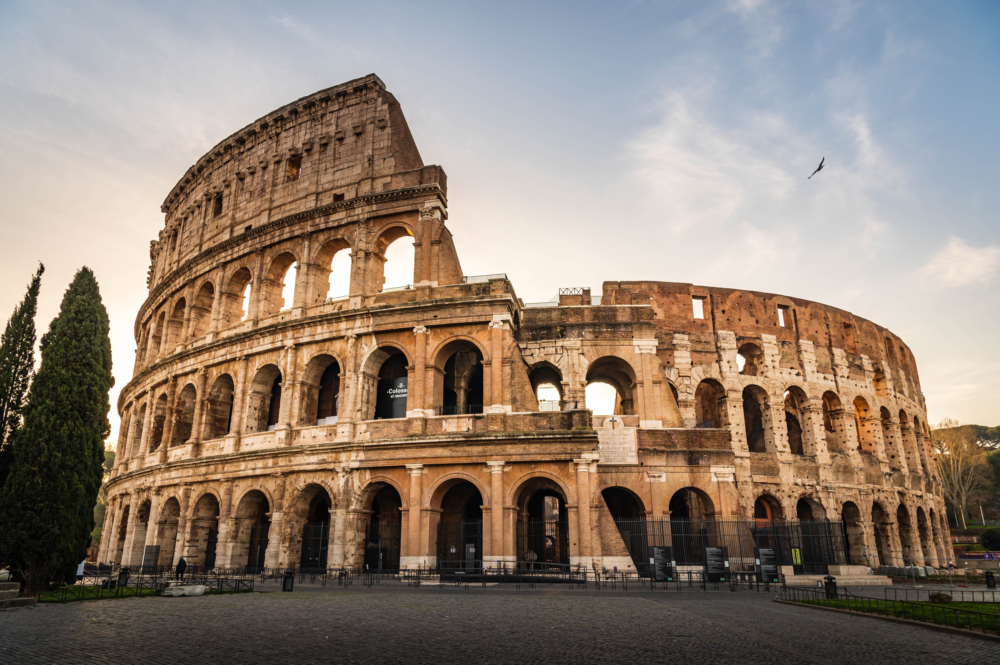
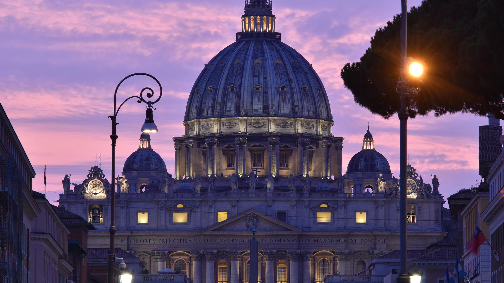
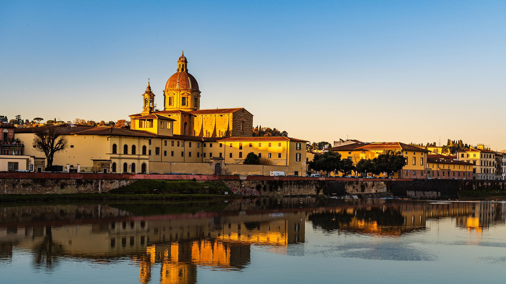

Італія — країна з найбагатшою історією, культурою та унікальними традиціями. Нижче зібрано найцікавіші факти про цю країну, розбиті за категоріями.
Італія має найбільшу кількість об'єктів всесвітньої спадщини ЮНЕСКО у світі (разом із Китаєм) — понад 55 локацій.
На території Італії розташовані дві незалежні мікродержави — Ватикан (найменша країна світу) та Сан-Марино (найстаріша республіка).
Туристи щодня кидають у фонтан Треві в Римі приблизно 3 000 євро; ці гроші вилучають і передають на благодійність.
В Італії розташовані три єдині активні вулкани в материковій Європі — Етна, Везувій та Стромболі.


В регіоні Абруццо (містечко Калдарі-ді-Ортона) є унікальний фонтан Fontana del Vino. З нього цілодобово замість води тече справжнє місцеве червоне вино. Його встановила місцева виноробня абсолютно безкоштовно для втомлених паломників та туристів .
В Неаполітанській затоці лежить мальовничий острівець Гайола. Він складається з двох скель, з'єднаних містком. Місцеві вважають його проклятим: майже всі його власники за останнє століття раптово помирали, банкрутували, потрапляли до в'язниці або божеволіли. Зараз острів повністю покинутий.
В Італії професія екзорциста (вигонителя бісів) офіційно визнана Католицькою церквою і є дуже затребуваною. У Римі та Мілані існують спеціальні гарячі лінії, а Ватикан щорічно проводить міжнародні курси для священників-екзорцистів, оскільки попит на їхні послуги в країні залишається високим.
У Венеції та Римі закоханим загрожує величезний штраф (до 300–500 євро) за прикріплення «замків кохання» на мости. Вага тисяч металевих замків руйнує історичні перила та архітектурні пам'ятки, тому поліція суворо стежить за цим через камери.
Італійці настільки серйозно ставляться до своєї їжі, що створили спеціальну поліцію для захисту пармезану (Parmigiano Reggiano). Спеціальні інспектори зі зброєю перевіряють супермаркети та ресторани по всьому світу, щоб виявити фальшивий сир, який видають за оригінал.